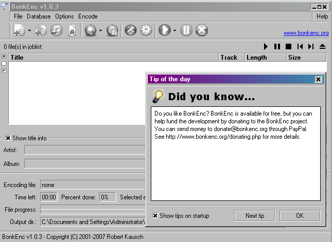
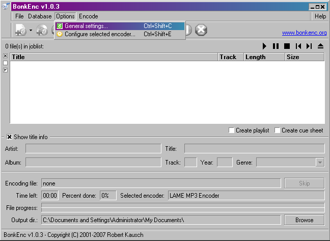
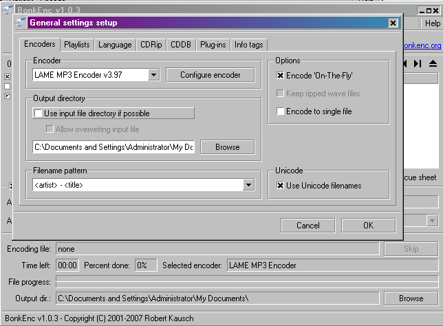
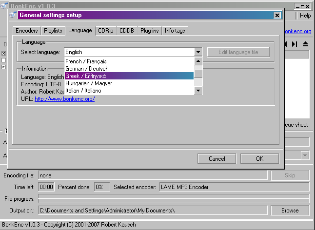

Μεταφορτώστε
('κατεβάστε') την τελευταία έκδοση του προγράμματος BonkEnc είτε από το
SourceForge
είτε από την ιστοδελίδα του BonkEnc.
Εγκαταστήστε το πρόγραμμα και εκκινήστε το. Βάλτε τώρα, ένα μουσικό CD
(audio CD) στο CD/DVD του υπολογιστή σας. Τα τραγούδια του CD σας, θα
εμφανιστούν αυτόματα στο κυρίως παράθυρο του BonkEnc. Εάν δεν
εμφανιστούν πατήστε το
"Add audio CD contents" κουμπί ώστε να εμφανιστούν τα τραγούδια.

Μιάς και δεν θέλουμε να
γράψουμε τα
ονόματα των τραγουδιών χειροκίνητα (και έχουμε σύνδεση στο
Διαδίκτυο) μπορούμε να 'ρωτήσουμε' μια Διαδικτυακή Βάση Δεδομένων για
να συμπληρωθούν αυτόματα τα ονόματα των τραγουδιών. Για να γίνει αυτό
απλώς πηγαίνουμε στο μενούν
"Database" και επιλέγουμε το "Query CDDB database". Θα εμφανιστεί μια
οθόνη σαν αυτή:

Το πρόγραμμα θα εμφανίσει αυτόματα τα ονόματα των τραγουδιών:

Αφού γίνει αυτό, μπορούμε να επεξεργαστούμε τις γενικές ρυθμίσεις του προγράμματος. Πηγαίνετε στο μενού "Options" και επιλέξτε "General settings". Θα εμφανιστεί η παρακάτω εικόνα:

Η επιλογή 'file name pattern' μας επιτρέπει να ορίσουμε πως θα διαμορφωθεί το όνομα και ο φάκελλος των αρχείων MP3που θα δημιουργήσουμε. Στο παράδειγμά μας θα χρησιμοποιήσουμε φακέλλους όπου θα αναφέρεται το όνομα του καλλιτέχνη και ο τίτλος του CD και τα τραγούδια θα είναι σύμφωνα με τη σειρά του CD και τους τίτλους τους. Άρα θα επιλέξουμε αυτήν την επιλογή:
"<artist> - <album>\<track> - <title>". Έτσι τα αρχεία μας θα έχουν την ακόλουθη μορφή:

Για τους πιό προχωρημένους χρήστες υπάρχουν πολλές άλλες επιλογές ώστε να κάνετε τις επιλογές της αρεσκείας σας.
Τώρα θα πρέπει να ρυθμίσουμε
τον
κωδικοποιητή LAME ώστε η ποιότητα των αρχείων που θα δημιουργήσουμε να
είναι ικανοποιητική. Πηγαίνουμε λοιπόν ξανά στο μενού "Options" και
επιλέγουμε "Configure selected
encoder".

Θα εμφανιστεί μια οθόνη σαν την ακόλουθη:

Το BonkEnc περιέχει αρκετές έτοιμες ρυθμίσεις για τον κωδικοποιητή LAME. Αυτές οι ρυθμίσεις ρυθμίζουν την ποιότητα του ήχου του παραγόμενου αρχείου. Όσο υψηλότερη η ποιότητα του ήχου, (π.χ. επιλογή "Extreme") τόσο περισσότερο χώρο θα καταλαμβάνουν στο σκληρό δίσκο τα αρχεία που θα δημιουργήσουμε, αλλά θα έχουν και καλύτερη πιστότητα. Ο συγγραφέας του εγχειριδίου προτιμά τις ρυθμίσεις "custom settings" και την χειροκίνητη ρύθμιση στην επιλογή "quality" όπως φαίνεται παραπάνω. Προς το παρόν, στην επιλογή "Use preset", επιλέξτε "Standard" και πατήστε OK. [Σ.τ.Μτφ: Αφού μάθετε να χρησιμοποείτε το πρόγραμμα αυτό μπορείτε να πειραματιστείτε και να βρείτε τις ρυθμίσεις που σας ταιριάζουν. Έτσι και αλλιώς η ακρόαση μουσικής είναι κάτι πολύ προσωπικό και σίγουρα θα βρείτε τις ρυθμίσεις που σας ταιριάζουν καλύτερα :) ] Τώρα μπορούμε να δούμε πως θα επιλέξουμε τα τραγούδια που θέλουμε και να τα κωδικοποιήσουμε και να τα αποθηκεύσουμε.
Επιστρέψαμε στην κύρια οθόνη του προγράμματος και μπορούμε να επιλέξουμε ποιά από τα τραγούδια θα κωδικοποιήσουμε και θα αποθηκεύσουμε. Στην αριστερή πλευρά κάθε τραγουδιού υπάρχει ένα μικρό κουτάκι. Όσα από αυτά διαθέτουν ένα Χ στο κουτάκι αυτό, είναι επιλεγμένα για αντιγραφή και κωδικοποίηση. Στο παράδειγμά μας θέλουμε να αντιγράψουμε όλο το CD, οπότε αφήνουμε επιλεγμένα και τα 5 τραγούδια αλλά αν θέλαμε μόνο ένα από αυτά θα έπρεπε να επιλέξουμε μόνο αυτό το ένα και μην έχουμε τα υπόλοιπα επιλεγμένα.
Μπορούμε τώρα να πατήσουμε το κουμπί 'Start the encoding proccess", όπως φαίνεται παρακάτω και να ξεκινήσει η διαδικασία κωδικοποίησης.

Στο κάτω μέρος της οθόνης θα
εμφανιστεί
μια γραμμή που θα μας δείχνει την πρόοδο της κωδικοποίησης:

Όταν τελειώνει η κωδικοποίηση κάθε τραγουδιού, αυτό θα αφαιρείται από τη λίστα που υπάρχει παραπάνω.
Συγχαρητήρια ! Μόλις
αντιγράψατε και
κωδικοποιήσατε το πρώτο σας CD με τη βοήθεια του προγράμματος BonkEnc !
ΕΠΙΛΟΓΗ ΓΛΩΣΣΑΣ ΓΙΑ ΤΑ ΜΕΝΟΥ ΤΟΥ BonkEnc :
---------------------------------------
Για να αλλάξετε γλώσσα στο μενού του
BonkEnc, θα κάνετε τα ακόλουθα:
(επιλογή γλώσσας γίνεται την πρώτη φορά που εκκινείτε το BonkEnc, αλλά
μπορείτε να επιλέξετε γλώσσα όποτε επιθυμείτε, κάνοντας τα παρακάτω)
Στην αρχική οθόνη του προγράμματος θα
πατήσετε το 'Ok' όπως φαίνεται παρακάτω

Έπειτα θα επιλέξετε 'Options' και
κατόπιν 'General Settings" όπως φαίνεται παρακάτω:

Στη συνέχεια επιλέγετε στο μενού που θα
εμφανιστεί "Language":

και θα εμφανιστεί η κάτωθι οθόνη:

Θα βρείτε στο κυλιόμενο μενού την
γλώσσα "Greek / Ελληνικά" θα την επιλέξετε με το ποντίκι
και θα πατήσετε "Ok". Έχετε επιλέξει με επιτυχία την Ελληνική
Γλώσσα για το BonkEnc !!
Υπ'όψιν πως ακόμα και οι μικρές συμβουλές
βοήθειας κατά την εκκίνηση του προγράμματος, θα
εμφανίζονται τώρα στην Ελληνική γλώσσα. Ρίξτε τους μια ματιά,
είναι χρήσιμες !